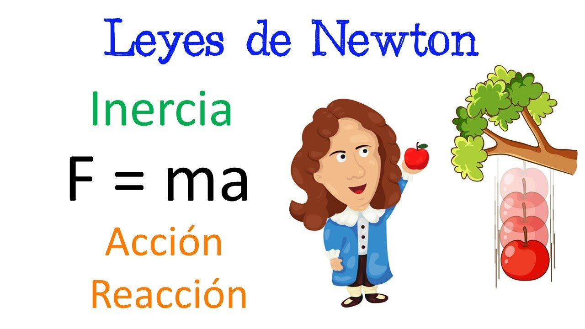
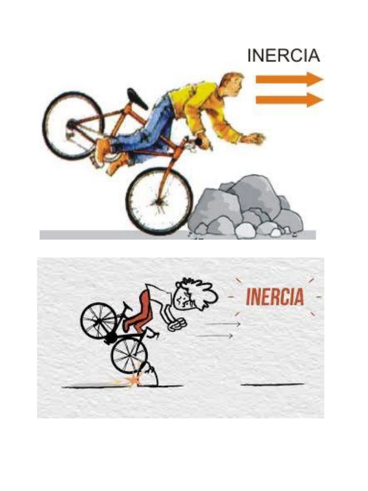
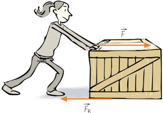

Introducción a las Leyes de Newton
Las leyes de Newton son los pilares de la mecánica clásica. Estas leyes explican cómo las fuerzas interactúan con la materia para generar movimiento, permitiendo calcular desde el diseño de un motor hasta la trayectoria de naves espaciales.

Primera Ley Inercia
La Primera Ley de Newton, también llamada Ley de la Inercia:
indica que un objeto no cambia su estado de movimiento por sí mismo. Si está en reposo, permanecerá en reposo; si se mueve en línea recta con velocidad constante, continuará así, salvo que una fuerza externa lo modifique. La inercia es la propiedad de los cuerpos de resistirse a cambios en su movimiento, y la masa cuantifica esta resistencia: a mayor masa, mayor inercia.
1. Primera Ley (Inercia): Se observa en los sistemas de seguridad automotriz. Los cinturones de seguridad y las bolsas de aire existen porque, ante un choque, tu cuerpo tiende a mantener su velocidad inicial debido a la inercia.

Segunda Ley Masa
Seguna ley de Newton o Principio de la Masa:
"Esta ley define la relación exacta entre fuerza y movimiento. Establece que la aceleración de un cuerpo es directamente proporcional a la fuerza neta aplicada e inversamente proporcional a su masa inercial. Es una ecuación vectorial, lo que significa que la aceleración siempre tendrá la misma dirección y sentido que la fuerza resultante. En el Sistema Internacional, la unidad de fuerza es el Newton (N), definido como MASA { m,kg} y w ACELERACION {a,m/s}"
2. Segunda Ley (Masa): Es la base de la balística y el transporte. Al diseñar un elevador, un ingeniero usa F=m*a para calcular la potencia necesaria del motor según la carga máxima de personas que debe acelerar verticalmente.

Calculadora de Fuerza
Fuerza = ?
Tercera Ley Acción y Reacción
Tercera ley de Newton o Principio de Acción y Reacción:
"Establece que las fuerzas siempre ocurren en pares. Si el cuerpo A ejerce una fuerza sobre el cuerpo B (acción), el cuerpo B ejerce simultáneamente una fuerza de igual magnitud y dirección, pero en sentido opuesto, sobre el cuerpo A (reacción)."
3. Tercera Ley (Acción/Reacción): Crucial en la exploración espacial y sistemas de colisión.
Conclusión: Las Leyes en el Mundo Real
Las leyes de Newton no son solo abstracciones matemáticas; son las reglas que rigen nuestro entorno físico y digital. Su comprensión es vital para el desarrollo tecnológico.
Desde la perspectiva de la informática, estas leyes son el corazón de los motores de física en videojuegos y simuladores médicos, donde cada línea de código debe respetar estos principios para que el entorno digital sea coherente con la realidad.
Video Explicativo
Newton Challenge Quiz
Pon a prueba tus conocimientos sobre las leyes de la física:
Cargando pregunta...
Bibliografía y Referencias
- Serway, R. A., & Jewett, J. W. (2018). Física para ciencias e ingeniería. Cengage Learning.
- Young, H. D., & Freedman, R. A. (2020). Física universitaria. Pearson Educación.
- Tipler, P. A., & Mosca, G. (2010). Física para la ciencia y la tecnología. Reverté.